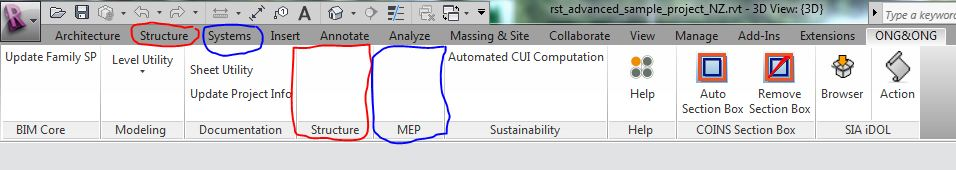
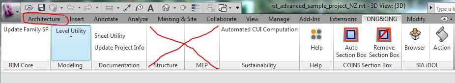

Dynamically Hide and Display a Ribbon Panel
Here is a quick little question on dynamically toggling the display of a custom ribbon panel, e.g. depending on the currently activated Revit disciplines.
First, however, let me share this nice and wise little quote regarding the current weather situation and actually life and happiness in general from the German humourist Karl Valentin (1882-1948):
I am happy if it rains – because if I am unhappy, it still goes on raining
(Ich freue mich, wenn es regnet – denn wenn ich mich nicht freue, regnet es auch).
Toggle Ribbon Panel Visibility
Question: Is there an easy way to dynamically turn a specific user ribbon panel on or off depending on the currently active Revit disciplines?
For instance, I have implemented these two separate Structure and MEP ribbon panels within our company's ribbon tab, and I would like them to automatically reflect the changes in discipline option.

When the structural and systems disciplines are disabled in the Revit user interface, these two panels should disappear:

I am aware of the dedicated VisibilityMode tag defined by the add-in manifest XML format, but that only enables and disables individual buttons depending on the discipline.
The command availability class provides even greater control and also only affects individual buttons.
I already made use of both these two options for other purposes.
The Revit 2013 API provides new properties like Application.IsStructureEnabled, etc. I would like the information returned by that property to dynamically turn the entire corresponding ribbon panel on and off, not just a single command.
Answer: Yes, the Revit API actually does provide complete and simple support for this functionality, as you can discover by exploring the methods and properties provided by the respective classes. The Revit API documentation always has some new little surprise to offer, if you study it carefully.
In this case, you can make use of the read-write RibbonPanel.Visible property, which can be set to false to hide a panel.
You can save the RibbonPanel instance in a global variable in your application class to switch its state at will.
You can also make use of a self-implemented toggle button in one panel to control another panel's visibility.